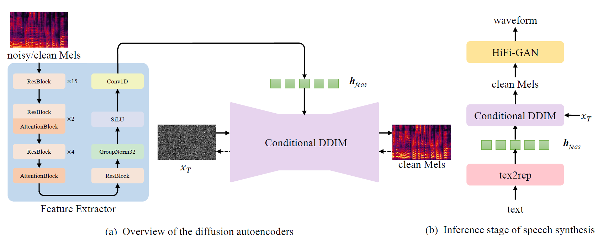

Speech Synthesis with Low-quality Data Using Noise-Robust Diffusion Autoencoders
Abstract. Speech synthesis models trained on massive data have achieved human-like synthetic speech, but the quality of synthesized speech is highly correlated with the quality of training data. Compared to high-quality ideal data recorded in professional studios, although low-quality data containing some noise is easier to collect in daily scenarios, utilizing low-quality data to train speech synthesis models has still become challenging. This paper proposes a training strategy for diffusion autoencoders that leverages low-quality data to obtain noise-robust representations. Additionally, we build a text-to-representation prediction module for a comprehensive end-to-end speech synthesis approach. Experiments conducted on both simulated and real-world noisy datasets demonstrate the noise robustness of the learned representations and the advantages of our proposed model over baseline models in terms of the naturalness and similarity of synthesized audio when using lowquality data.
This page is for research demonstration purposes only.
Contents
Model Overview

Figure. The proposed speech synthesis method: (a) Overview of the diffusion autoencoders, which consists of the feature extractor and conditional Denoising Diffusion Implicit Model (DDIM). The dotted line stands for the training process, and the solid line stands for the inference process. (b) In the inference stage, the tex2rep model converts text into representations and conditional DDIM converts representations into Mel-spectrogram, which is converted into speech through HiFi-GAN.
Enhanced Speech by Diffusion Autoencoders
"Clean" stands for our diffusion autoencoders trained with clean dataset. "Noisy" stands for our diffusion autoencoders trained with noisy dataset. "Mixed" stands for our diffusion autoencoders trained with mixed dataset. "Baseline (noisy)" trained with noisy dataset. "Baseline (mixed)" trained with mixed dataset. The following are results on the clean test set.
| Ground Truth | Noisy Speech | Baseline (noisy) | Baseline (mixed) | Clean | Noisy | Mixed |
|---|---|---|---|---|---|---|
The following are results on the noisy test set.
| Ground Truth | Noisy Speech | Baseline (noisy) | Baseline (mixed) | Clean | Noisy | Mixed |
|---|---|---|---|---|---|---|
Synthesized Speech using Text
The tex2rep model converts text into representation and conditional DDIM converts representation into mel-spectrogram, which is converted into speech through HiFi-GAN. "Clean" stands for tex2rep model trained with clean dataset. "Noisy" stands for tex2rep model trained with noisy dataset. "Mixed" stands for tex2rep model trained with mixed dataset. "Baseline" trained with mixed dataset. The following are results on the text test set.
| Text | Baseline | Clean | Noisy | Mixed |
|---|---|---|---|---|
| Once when I stole a candy bar, he made me take it back and tell the man I stole it and that I'd pay for it. But it was Mom who understood I was just a kid. | ||||
| I broke my leg once on the playground swing and it was Mom who held me in her arms all the way to the hospital. | ||||
| For many months he had admired a beautiful sports car in a dealer's showroom, and knowing his father could well afford it, he told him that was all he wanted. | ||||
| His father told him how proud he was to have such a fine son, and told him how much he loved him. He handed his son a beautiful wrapped gift box. | ||||
| Many years passed and the young man was very successful in business. He had a beautiful home and a wonderful family, but realizing his father was very old, he thought perhaps he should go to see him. |